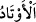
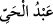
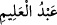
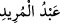
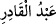

Zühretü’r-riyâz’da der ki: Yeryüzüne dikilen ilk dağ Ebû Kubeys dağıdır. Dağların
sayısı da tepeler hariç altı bin altıyüz yetmiş üçtür (6673). Allah Teâlâ, dağlara
birtakım özellikler bahşetmiştir ki bunlardan biri soğuğu kendisine çekip onu su ve kar
hazineleri hâline getirmesi, sonra da yaratıcısının emriyle belli oranlarda kulların
menfaatine göndermesidir. Her bölgenin kendi kapasitesine göre belli bir hakkı vardır.
Yine; kulların menfaatine olarak vâdîler de bunlardan yaratılmıştır. Sonra; türlü türlü
madenler, altın, gümüş, demir ve envâî çeşit cevher dağlara bırakılmış, emânet
edilmiştir. Dağlar aynı zamanda Allah’ın haznesi ve kalesi olup O’nun ne denli güçlü ve
ne kadar hikmetli olduğunun da delilidir. Vahşi ve yırtıcı hayvanlar geceleri dağlara
hapsedilir.
Cenab-ı Hak dağlara bir de “emânet”e muhatap olma şerefi bahşetmiştir. Yine dağlara
(Kur’an’da) tesbih, korku ve saygı gibi vasıflar isnad edilmiştir. Allah; -Uhud’u
Peygamberimiz’e, Tûr’u Mûsâ’ya, Serendîb’i Âdem’e, Cûdî’yi de Nûh’a tahsis ettiği
gibi, dağları da peygamberlerinin kürsüsü kılmıştır ki şeref olarak bu kâfidir. Dağlar;
varlıklar arasında erkekler makamındadır; nitekim kâmil bir adama “dağ” denir.
Allah dostlarından biri Bağdatlıların Hülâgû Han tarafından helak edildiği gece bir
rüya görmüş; rüyasında Irâkayn dağları, Bağdat üzerine esen kapkara rüzgârlarla
yeryüzünden siliniyormuş. Daha sonra haber almış ki Hülâgû Han Bağdat’a girerek
erkeklerden velî, âlim, sâlih, komutan ve daha nice insanı katletmiş.
Bu nedenledir ki bazı insanlar şöyle demiştir: “Sabit dağlar yerin sûretâ kazıklarıdır;
velîler ise yerin gerçek mânâda kazıklarıdır.” Tıpkı dağların diğer yerlerin üstünde
olması gibi, velîler de (bazı özellikleri sebebiyle) diğer insanların fevkındedir. Nitekim
(
) “üzerinde” ifâdesi de bunu gösteriyor ki bu ifâde aslında “hepsinin üzerinde”
demektir.
Kàf dağı, bütün dağların üzerinde olduğu gibi kutub, yani gavs-i âzam da bütün
velîlerin üzerindedir. Daha aşağı seviyelerdeki dağlar nasıl “Kâf” dağı ile ayakta
duruyor ise aynı şekilde daha aşağı mertebelerdeki velîler de “Kutub” ile ayakta
durmaktadır.
Velilerin özelliklerinden biri de içlerinde kendilerine (
) “kazıklar” denenlerin
bulunmasıdır. Bunlar dört tane olup biri -Allah’ın izniyle- doğuyu korur ki buna (
) “Hayy’ın kulu” denir; biri batıyı korur ki buna (
) “Alîm’in kulu” denir; biri
kuzeyi korur ki buna (
) “Mürîd’in kulu” denir; biri de güneyi korur ki ona da (
) “Kàdir’in kulu” denir.
Şeyh-i Ekber’in (k.s.) Fütûhât’ta açıkça belirttiği üzere İmam Şâfi’î (r.h.) de bu dört
kazıktan (evtad) biri idi. Yağmur gökten velîlerin bereketi sayesinde yağar; bitkiler
onlar sâyesinde biter, mahlûkàta gelebilecek belâlar onların duâsı ile savuşturulur ve
yaşamları ile ölümleri arasında bir fark yoktur. Çünkü onlar varlıklarından gelen
sıfatlar bakımından -ıztırârî ölümden önce- ihtiyârî ölüm ile ölmüş oldukları için her